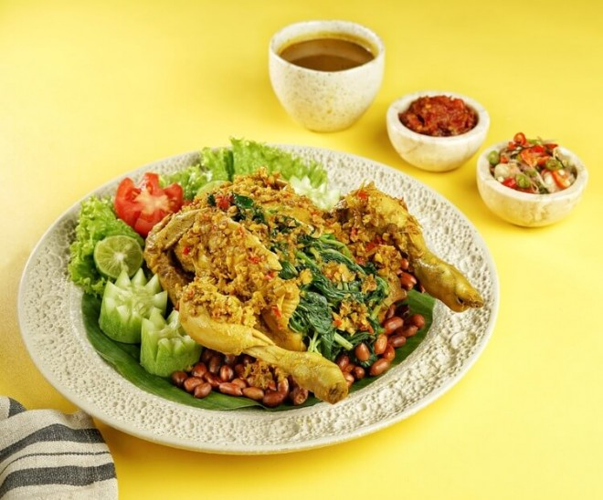
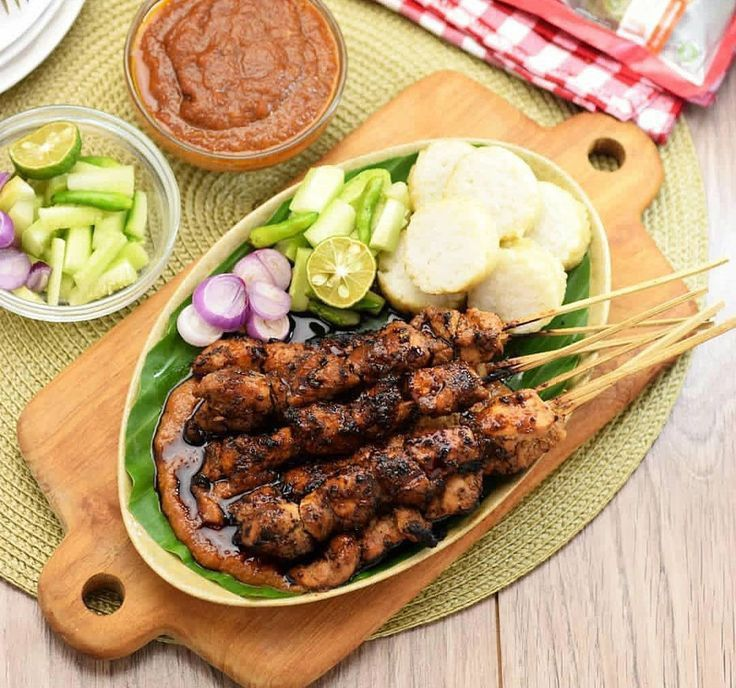

✨ Hidangan Ikonik ✨

Ayam betutu adalah hidangan khas Bali yang berupa ayam utuh yang dibumbui rempah khas Bali, kemudian dikukus atau dipanggang perlahan hingga dagingnya empuk dan bumbu meresap.

Sate bulayak adalah sate khas Lombok, Nusa Tenggara Barat, yang terbuat dari daging (sapi, ayam, atau jeroan) yang dibumbui rempah khas Sasak, lalu dibakar dan disajikan bersama lontong yang dibungkus daun enau muda yang disebut bulayak.

Se,i Daging asap adalah sup daging sapi khas Jawa Timur yang memiliki ciri khas kuah hitam pekat dari bumbu keluak. Hidangan ini kaya rempah, memiliki daging yang empuk, dan biasanya disajikan dengan nasi, tauge pendek, telur asin, dan sambal.